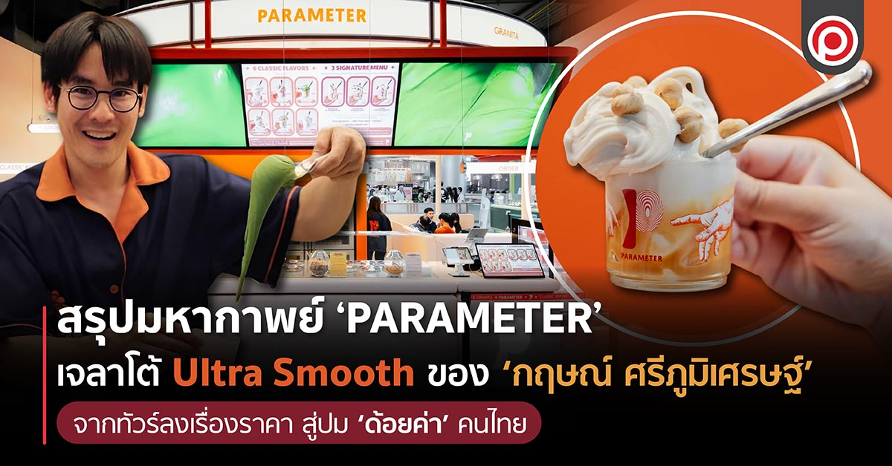
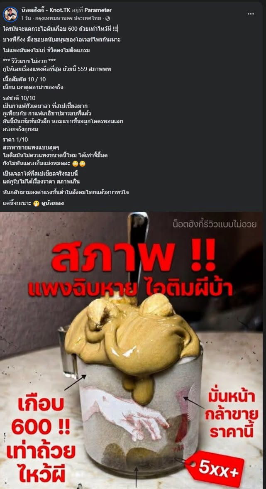
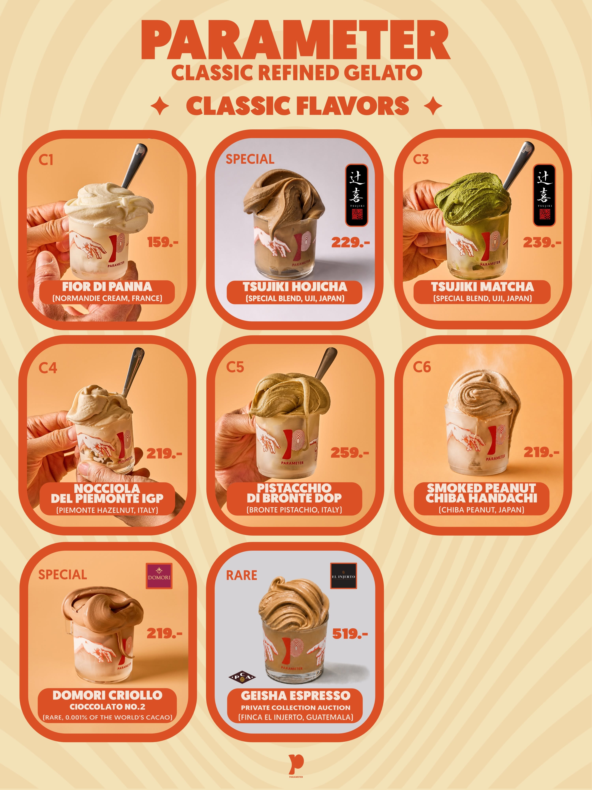

ข่าวที่น่าสนใจ
ขอขอบคุณ www.sanook.com
อัปเดต คนมีรถแบบนี้ ไม่ต้องยื่นอุทธรณ์บัตรสวัสดิการแห่งรัฐ 2569
เปิด 10 สายการบินดีที่สุดในโลกปี 2026 การบินไทยติดอันดับไหน? EVA Air คว้าแชมป์!
เลขเด็ดปฏิทินจีน ปฏิทินครอบครัวข่าว 3 งวด 1/8/69 แนวทางลุ้นโชครวยรับต้นเดือน
สรุปมหากาพย์ ‘PARAMETER’ เจลาโต้ Ultra Smooth ของ ‘กฤษณ์ ศรีภูมิเศรษฐ์’ จากทัวร์ลงเรื่องราคา สู่ปม ‘ด้อยค่า’ คนไทย

คงไม่มีแบรนด์ไหนที่จะสามารถ 'เรียกทัวร์' ชาวเน็ตไทยรายวันได้เท่ากับร้าน PARAMETER ของ กฤษณ์ ศรีภูมิเศรษฐ์ อดีตพิธีกรและดีเจชื่อดัง อีกแล้ว ตั้วแต่ประเด็นเรื่องของ 'ราคา' ที่สูงเกินไปหรือไม่เมื่อเทียบกับปริมาณ วิธีทานที่ 'ห้ามเคี้ยว' ไปจนถึงการ 'ด้อยค่า' Mindset คนไทย และเจลาโต้ร้านอื่น ทำให้ในวันที่ 19 กรกฎาคมที่ผ่านมา กฤษณ์ ก็ได้ออกแถลงข่าวชี้แจงทุกประเด็น โดย Positioning จะสรุปให้อ่านกัน
ไอติมเท่าถ้วยไหว้ผี ทำไมถึงแพงขนาดนี้?
จุดเริ่มต้นของกระแสเรียกทัวร์ของ PARAMETER เลยก็คือ ราคา ที่ถูกมองว่าสูงเมื่อเทียบกับปริมาณ โดยสินค้าของร้านมีราคาตั้งแต่ประมาณ 159 บาท ไปจนถึง 519 บาท ขึ้นอยู่กับรสชาติและวัตถุดิบ โดยเฉพาะรสพรีเมียมที่ใช้ถั่ว กาแฟ หรือวัตถุดิบหายากจากต่างประเทศ จนเกิดคำวิจารณ์หนึ่งที่กลายเป็นไวรัลคือประโยคว่า "มั่นหน้ากล้าขายราคานี้ ไอติมเท่าถ้วยไหว้ผี" ประโยคนี้กลายเป็นจุดเริ่มต้นให้ชาวเน็ตจำนวนมากตั้งคำถามว่าเจลาโต้ของร้านแตกต่างจากไอศกรีมทั่วไปมากเพียงใด และคุณภาพที่ร้านกล่าวถึงสมเหตุสมผลกับราคาหรือไม่ แต่สิ่งที่ทำให้เรื่องไม่จบเพียงแค่นี้ คือการที่ กฤษณ์ เลือกตอบโต้เสียงวิจารณ์ด้วยตัวเองอย่างต่อเนื่อง อย่างไรก็ตาม ก็มีชาวเน็ตอีกด้านที่มองว่า ร้านเองก็มีสิทธิ์ที่จะตั้งราคา ขณะที่ผู้บริโภคก็มีสิทธิ์จะเลือกซื้อหรือไม่ซื้อ หากเห็นว่าราคาไม่เหมาะสม

แพงไม่ว่ายังต้องกินแบบ Pro
นอกจากประเด็นเรื่องราคาที่ดูจะสวนทางกับปริมาณแล้ว อีกหนึ่งประเด็นที่เรียกทัวร์ก็คือ วิธีกิน โดยมีทั้งแบบ Pro และแบบ Advance กฤษณ์ ได้อธิบายความพิเศษของเจลาโต้ว่ามีความเนียนระดับ Ultra Smooth (จนกลายเป็นวลีฮิตของชาวโซเชียล) ทำให้ต้องมีวิธีกินที่ถูกต้อง เพื่อให้ดื่มด่ำกับรสชาติ โดยเฉพาะการ ห้ามเคี้ยว รวมถึง ห้ามถ่ายรูปหรือวิดีโอนาน ควรรับประทานเจลาโต้ทันทีหลังได้รับสินค้า เพราะเนื้อสัมผัสจะเปลี่ยนไปตามอุณหภูมิ กฤษณ์ อธิบายว่าเจลาโต้ในตู้อยู่ที่ -8 ถึง -9 องศา เมื่อตักเสิร์ฟจะอยู่ที่ราว -7 องศา และช่วงที่กลิ่นรสแสดงออกดีที่สุดคือ -6 องศา อย่างไรก็ตาม สิ่งที่ผู้บริโภคจำนวนหนึ่งรับรู้กลับไม่ใช่ 'คำแนะนำ' แต่มองเป็นการควบคุมประสบการณ์ลูกค้ามากเกินไป เพราะสำหรับหลายคน การซื้อไอศกรีมไม่ได้มีแค่เรื่องรสชาติ แต่รวมถึงการถ่ายรูป ทำคอนเทนต์ หรือรับประทานตามจังหวะของตัวเอง

ยิ่งมีคนตั้งคำถามว่า ในเมื่อร้านไม่อยากให้ลูกค้าถ่ายรูป เหตุใดกฤษณ์เองจึงถ่ายคอนเทนต์ขณะกินได้ตามใจ ซึ่ง กฤษณ์ ก็ตอบว่า ตนเองผ่านการฝึกฝนจนสามารถประเมินอุณหภูมิด้วยมือสัมผัสหรือสายตาได้ทันที (รู้ว่า -7 องศาจากการจับ, -8 องศาจากการมอง) คำอธิบายนี้กลับกลายเป็นกระแสล้อเลียนมากกว่าจะสร้างความน่าเชื่อถือ ประเด็นที่เติมเชื้อไฟคือคอนเทนต์ของอินฟลูเอนเซอร์วัยรุ่นที่เล่นมุก "แอบเคี้ยวเจลาโต้ลับหลังพี่กฤษณ์" กฤษณ์ตอบโต้ด้วยการโพสต์ภาพคนดังกล่าวลงเฟซบุ๊กส่วนตัว พร้อมประกาศ "ขอแบน" ห้ามซื้อรส Signature ที่มีถั่ว ให้กินได้แค่รส Classic แม้ภายหลังกฤษณ์จะชี้แจงว่าเป็นเพียงมุกตลกทำคอนเทนต์กับยูทูบเบอร์หน้าตู้ ไม่ได้แบนจริง แต่เมื่อถูกแชร์ต่อโดยไม่มีบริบทครบ คนจำนวนมากจึงเข้าใจว่าเจ้าของร้านใช้อำนาจเลือกปฏิบัติกับลูกค้าที่ไม่ทำตามวิธีกินที่ร้านกำหนด ดราม่าจึงขยายจาก "เจลาโต้แพงหรือไม่" ไปสู่ "ลูกค้าจ่ายเงินแล้ว มีสิทธิ์กินแบบของตัวเองหรือไม่"

จุดแตกหัก เมื่อวิจารณ์ Mindset คนไทย และด้อยค่าร้านอื่น
จุดที่ทำให้กระแสทัวร์ลงรุนแรงที่สุดคือตอนกฤษณ์ออกมาพูดถึงคนที่เปรียบเทียบเจลาโต้ของร้านกับสินค้าราคาถูกกว่า โดยมองว่าประเทศพัฒนาแล้วให้คุณค่ากับสินค้าคุณภาพสูง ขณะที่สังคมไทยมักแข่งกันทำของราคาถูกและตั้งคำถามกับราคาแพงมากกว่าพิจารณาวัตถุดิบหรือกระบวนการผลิต ปัญหาคือ ถ้อยคำที่ใช้ เช่น "Mindset ไม่พัฒนา" "อยู่แต่ในกะลา" "ประเทศจะมีแต่ของห่วยๆ" ซึ่งหลายคนมองว่าเป็นการลดทอนผู้วิจารณ์ให้กลายเป็นคนไม่มีความรู้ และเหมารวมว่าคนไม่มีกำลังซื้อสินค้าพรีเมียมคือคนไม่พัฒนา เมื่อมีผู้ใช้โซเชียลรายหนึ่งบอกว่าตนรายได้น้อยจึงต้องเลือกซื้อของที่เกิดประโยชน์มากกว่า ก็ถูกตอบโต้ในทำนอง "อยู่จนแบบเดิม" และเมื่อถูกหาว่าด้อยค่าคนไทย เจ้าตัวก็ใช้คำว่า "กะลาแลนด์" ตอบกลับ นอกจากนี้ เมื่อมีคนคอมเมนต์ถึงร้านเจลาโต้อื่น กฤษณ์ ก็ตอบโต้ในเชิง ด้อยค่า ว่า แย่กว่า PARAMETER และมองว่าคนคอมเมนต์ ไม่รู้จริงในเรื่องเจลาโต้ และไอศกรีม ถ้อยคำเหล่านี้เมื่อถูกแคปแชร์ต่อ ก็กลายเป็นภาพจำของแบรนด์อย่างรวดเร็ว ชาวเน็ตจำนวนหนึ่งมองว่า กฤษณ์ฉลาดในการทำให้แบรนด์อยู่ในกระแสต่อเนื่องเกือบครึ่งปี แต่กำลังพลาดจากการล้ำเส้นดูถูกผู้บริโภค กระแสวิจารณ์จึงขยายจากเรื่องสินค้าไปสู่เรื่องความเหลื่อมล้ำ รสนิยม และเสรีภาพในการใช้เงินของผู้บริโภค
ดราม่าลุกลามจนต้องแถลงข่าว
หลังเผชิญกระแสต่อเนื่อง กฤษณ์จัดแถลงข่าวชี้แจงทุกประเด็นในวันที่ 19 กรกฎาคมที่ผ่านมา โดย สรุปสาระสำคัญ:
- เรื่องคำพูด "กะลาแลนด์" — ขอโทษจากใจหากคำพูดทำให้รู้สึกแย่ ยืนยันไม่ได้มีเจตนาดูถูกคนไทยหรือมองว่าคนจนไม่ควรกิน ต้องการสื่อเพียงว่าอยากเห็นสังคมให้คุณค่ากับผู้ผลิตที่ตั้งใจทำของดี เหมือนที่เห็นในอิตาลีและญี่ปุ่น ยอมรับว่าการเลือกใช้คำแรงทำให้เจตนาถูกตีความผิด
- เรื่องห้ามถ่ายรูป — ยืนยันไม่ได้มีกฎบังคับจริง เป็นเพียงคำแนะนำเพื่อให้กินตอนรสชาติดีที่สุดก่อนละลาย ยอมรับว่าวิธีสื่อสารก่อนหน้านี้ทำให้หลายคนเข้าใจผิดว่าเป็นข้อห้าม
- เรื่องแบนลูกค้า — ย้ำอีกครั้งว่าเป็นแค่มุกตลกทำคอนเทนต์ ไม่ได้โกรธหรือขึ้นบัญชีดำจริง
- เรื่องราคา — ไม่เกี่ยวกับค่าเช่าในห้าง ต่อให้เปิดนอกห้างก็ราคาเดิม เพราะต้นทุนวัตถุดิบสูงจริง เช่น พิสตาชิโอจากเมืองบรอนเต้ที่ต้องประมูลมาในปริมาณจำกัด และกระบวนการ Classic Gelato ที่ใช้เวลา 24 ชั่วโมงถึง 30 วัน พร้อมเผยจะมีรสใหม่ราคา 700 บาทเร็ว ๆ นี้ และเปิดกว้างหากมีใครทำได้ในราคาถูกกว่าด้วยมาตรฐานเดียวกัน
- น้ำหนักแต่ละถ้วยไม่เท่ากัน — กฤษณ์อธิบายว่าเจลาโต้เป็นงานคราฟต์ตักด้วยมือ ไม่ใช่สายการผลิตอุตสาหกรรม จึงควบคุมน้ำหนักให้เท่ากันเป๊ะทุกถ้วยไม่ได้ การกำหนดช่วง 90-100 กรัมไม่ได้ทำเพื่อควบคุมต้นทุนเท่านั้น แต่เพื่อรักษาสัดส่วนรสชาติที่ออกแบบไว้ และเลือกชั่งให้เห็นต่อหน้าเพื่อความโปร่งใส
- ศึกษาเจลาโต้มา 5 ปี แต่ไม่ได้อยู่ต่างประเทศต่อเนื่อง — กฤษณ์ชี้แจงว่า 5 ปีที่อ้างถึงเป็นการเดินทางไป-กลับระหว่างไทยกับต่างประเทศ ไม่ใช่ย้ายไปอยู่รวดเดียว โดยใช้เวลาในอิตาลีปีละ 5-7 เดือน แบ่งเป็นเรียนเจลาโต้สมัยใหม่ 1 ปี คลาสสิก 2 ปี กระบวนการคั่วครึ่งปี และทดลองพัฒนาสูตรอีก 1 ปีครึ่ง ก่อนกลับมาปรับสูตรลดความหวานลง 20% ให้เข้ากับคนไทยโดยคงความเข้มข้นไว้ พร้อมระบุว่าทุ่มเวลาทำงานวันละราว 17 ชั่วโมง